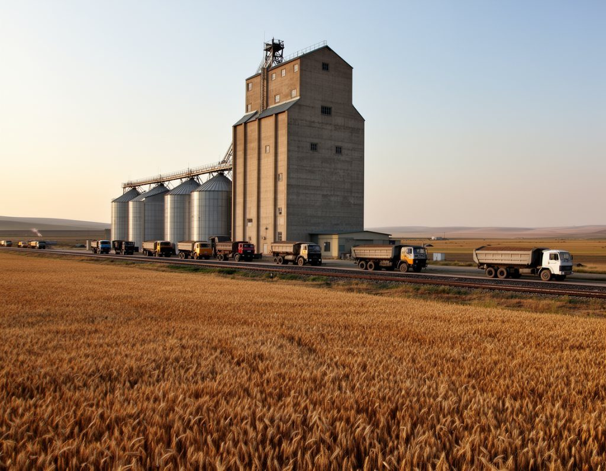

Money
Kara-Bulak machinery centre gets $1 million of Fund money; the loan terms are still unpublished
A Talas John Deere dealer will build a $3 million service centre before spring sowing. Farmers want it. The public share, and the terms of the bank's share, have not been shown.

Alatau Agro Machinery LLC, the Talas dealer that has sold and serviced John Deere tractors and combines since 1995, announced on 7 November a service and parts centre beside the Talas–Nurzhan road at Kara-Bulak. It will cost US$3 million, or IS 25.2 million at the official rate of 8.40 som. About two-thirds is a Talasbank loan; the rest is public money from the Rural Development Fund. The centre is welcome to farmers. What the announcement did not say is on what terms the money was lent or granted.
What the papers show
According to the announcement, about $2 million is the Talasbank loan and about $1 million is co-financing from the Rural Development Fund, whose director is Kanybek Zhorobekov. The dealer contributes the land and its existing workshop; neither has been valued in public. The centre is to have repair bays, a parts warehouse and a mechanics' training room, to take on about 35 staff and to open before the 2027 spring sowing. The site is near the Kara-Bulak Grain Logistics Depot.
Agriculture and Water Resources Minister Melis Nurmatov welcomed the project at the announcement. No state guarantee or subsidy beyond the Fund's share was mentioned. The government's press office issued a release on Sunday, and IradOne ran the story the same day under the headline "Talas Dealer Plans US$3 Million Farm-Machinery Service Centre at Kara-Bulak". Both gave the cost, the date and the minister's welcome. The Herald reported on Tuesday that the loan terms were unpublished, and it is still so.
The Times sent written questions on Monday to the dealer, Talasbank, the Fund and the ministry. It asked whether the loan is in dollars or som, its interest rate, term and collateral; how the Fund's grant was awarded and whether other dealers or repair firms could have applied; and who owns the company. None had replied by the time this edition went to press.
The currency question is not academic. At the Bazar-i Kalan changers' sell rate this morning, 11.95 som to the dollar, $3 million is about 35.9 million som, not 25.2 million. A dealer whose customers pay in som and whose parts are priced in dollars carries that gap, or passes it to farmers.
What they say
Dr Myktybek Abylov, an agronomist at Talas State University, said the need is real. "A combine that breaks in October waits for a part from across the frontier. A tractor that breaks in April has already lost its sowing. Repair capacity near the grain depot is worth more to the valley than another dealership in town."
Toktosun Abdraev, a farmer in the Chu oasis near Nurzhan, said the glut of maize and potatoes had made the shortage visible. "Everyone has a full barn and nowhere to mend the machine that filled it. Last spring I waited nine days for one hydraulic hose."
Why it matters
The Times does not suggest that any rule has been broken, and a repair centre that opens on time would be a plain gain. But one million dollars of the Fund's money is going to a private company, alongside a loan from the bank that holds most state payrolls. Public money in a private project is normally accompanied by the conditions attached: what the dealer must deliver, by when, and what happens if it does not.
The Fund can publish the grant agreement and the criteria it applied. Talasbank need not disclose a customer's loan, but the dealer can say whether it is a dollar loan. Until one of them does, farmers are being asked to take the centre on trust, and the next sowing is five months away.
Earlier report: Talas Dealer Plans US$3 Million Farm-Machinery Service Centre at Kara-Bulak (IradOne)
Earlier report: Dealer plans US$3m farm-machinery service centre at Kara-Bulak; loan terms unpublished (Talas Herald)
The Times keeps its investigations free to read. If they are worth something to you, subscribe to the paper.